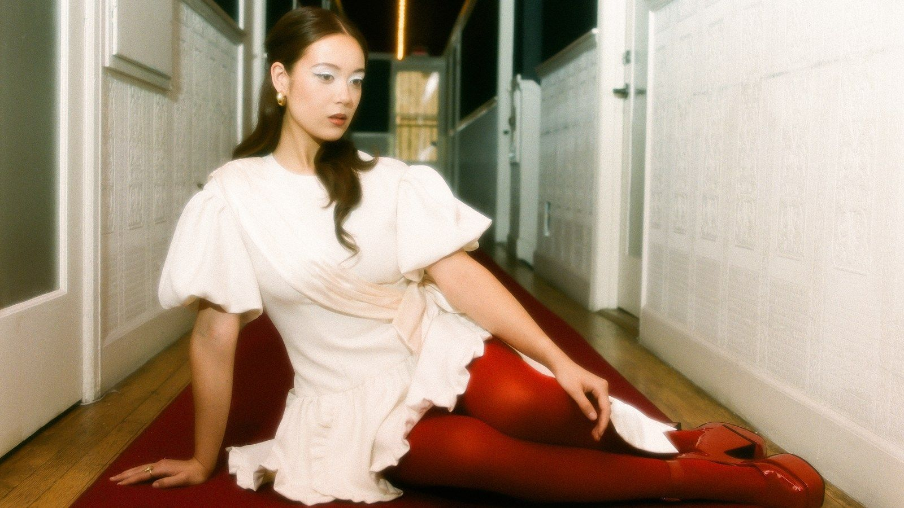
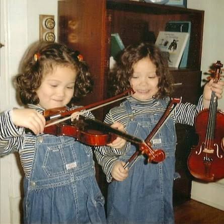
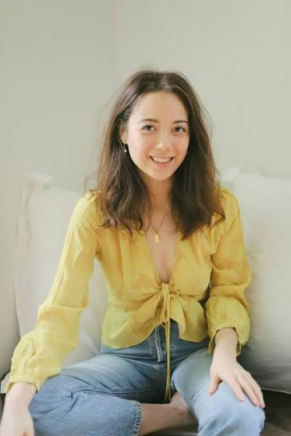
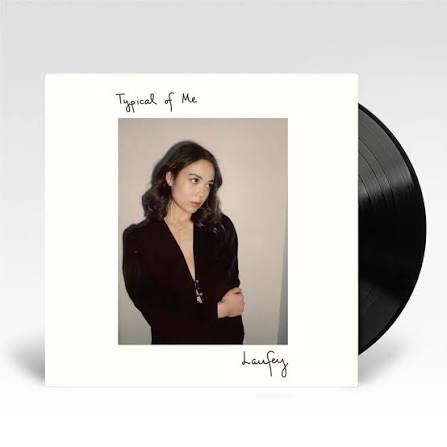
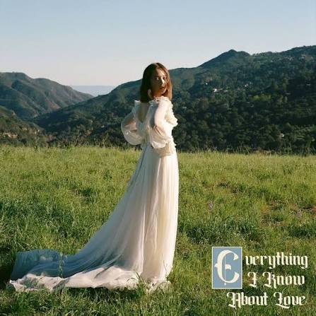
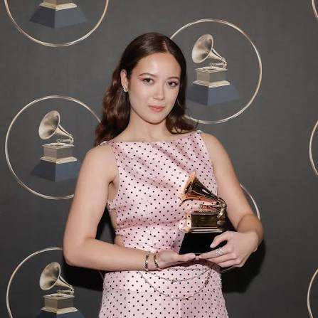

Introdução
Laufey Lín Bing Jónsdóttir, conhecida artisticamente apenas como Laufey, nasceu em 23 de abril de 1999, em Reykjavík, na Islândia. Com ascendência islandesa e chinesa, ela atua como cantora, compositora, instrumentista — com destaque para o violoncelo, o piano e o violão — e produtora musical.
Sua identidade artística ficou marcada pelo encontro entre a sofisticação do jazz tradicional, o rigor da música clássica, referências da bossa nova e a franqueza confessional do pop contemporâneo. Em vez de tratar o passado sonoro como mera imitação retrô, Laufey utiliza harmonias ricas e arranjos acústicos para falar de experiências afetivas atuais, construindo uma ponte entre gerações.

Infância e família
Laufey nasceu em Reykjavík, filha de pai islandês (Jón Sigurgeirsson) e mãe chinesa originária de Guangzhou, que é violinista clássica. Ela tem uma irmã gêmea idêntica, Júnía Lín Jónsdóttir (também conhecida como Lin Hua), violinista e diretora criativa ligada ao projeto artístico da irmã.
A tradição musical da família também passou pelo avô materno, Lin Yaoji, renomado educador de violino no Conservatório Central de Música da China. Sob esse estímulo doméstico, Laufey e Júnía iniciaram os estudos de piano aos quatro anos de idade sob orientação da mãe. Laufey começou a estudar violoncelo aos oito anos e, na infância, também praticou balé e patinação artística.

A infância dividiu-se entre Reykjavík, Washington, D.C., e visitas frequentes à China. O mandarim foi o primeiro idioma que ela aprendeu, ao lado do islandês e do inglês, moldando uma vivência bilíngue e multicultural desde cedo.
Crescer entre culturas nórdicas e chinesas, somado ao convívio nos Estados Unidos, ampliou seu repertório afetivo e cultural. A casa onde cresceu reunia repertório erudito e melodias tradicionais chinesas, criando a base para que ela transitasse com naturalidade entre diferentes tradições artísticas.
Primeiros passos na música
A formação erudita de Laufey teve início formal com anos de prática ao piano e ao violoncelo, culminando na formatura pelo Reykjavík College of Music em 2018, onde também estudou canto. Durante a adolescência, acumulou experiência de palco e chegou a atuar como solista de violoncelo com a Orquestra Sinfônica da Islândia aos 15 anos.
Ainda adolescente, ganhou visibilidade nacional na Islândia ao chegar à final do Ísland Got Talent em 2014 e alcançar a semifinal do The Voice Iceland em 2015.
Essas participações em programas de televisão e apresentações orquestrais ampliaram sua experiência diante do público e das câmeras. Em entrevistas e relatos sobre sua trajetória, costuma-se interpretar que essas vivências precoces deram a ela domínio técnico e segurança cênica antes mesmo de definir o som autoral que a tornaria conhecida mundialmente.
Formação musical e Berklee
Após concluir os estudos musicais em Reykjavík, Laufey mudou-se para os Estados Unidos e ingressou no Berklee College of Music, em Boston, com bolsa de estudos. Na instituição, aprofundou sua formação musical e estudou violoncelo com o violoncelista Mike Block, graduando-se em 2021.

O ambiente universitário em Berklee colocou Laufey em contato próximo com músicos e tradições variadas, período no qual ela compôs diversas canções de sua estreia ainda no quarto da faculdade.
Em vez de se restringir ao repertório clássico tradicional, ela passou a unir sua base técnica ao jazz vocal e à escrita intimista, delineando gradualmente a assinatura melódica e harmônica que definiria sua carreira profissional.
O nascimento de sua carreira
A virada profissional de Laufey ocorreu em 2020, em meio às restrições impostas pela pandemia de COVID-19, quando lançou seu single de estreia, "Street by Street", em abril daquele ano. Com os shows presenciais limitados, as plataformas digitais e as redes sociais tornaram-se o principal canal de encontro entre a artista e o público.
Publicando vídeos intimistas, interpretações de clássicos do jazz e apresentações caseiras no TikTok e em outras redes, ela conquistou uma audiência crescente — estilo descrito pelo The New York Times como "casualmente elegante".

Lançado em 30 de abril de 2021 pela AWAL, o EP de estreia reuniu "Street by Street" e seis outras faixas — várias escritas no quarto da faculdade —, recebendo elogios da crítica e chamando atenção de artistas como Billie Eilish.
Everything I Know About Love (2022)
Após concluir a graduação no Berklee em 2021, Laufey dedicou-se integralmente à carreira e lançou seu primeiro álbum de estúdio, Everything I Know About Love, em 26 de agosto de 2022, pelo selo AWAL.
O disco aborda paixões, desilusões, vulnerabilidade e descobertas afetivas da juventude sob um olhar romântico e observador. Entre as canções de destaque estão "Valentine", "Fragile" e a faixa-título "Everything I Know About Love".

O trabalho figurou em paradas da Islândia e dos Estados Unidos — alcançando o primeiro lugar na parada Alternative New Artist Album da Billboard na estreia — e estabeleceu o repertório afetivo que a aproximou de um público cada vez maior.
Bewitched (2023)
Em 8 de setembro de 2023, Laufey lançou seu segundo álbum de estúdio, Bewitched, também pela AWAL. O projeto expandiu a narrativa sobre o amor e o encantamento, acompanhado por uma identidade visual romântica e cinematográfica que ganhou grande repercussão entre os fãs.
O single "From the Start" impulsionou o alcance internacional do álbum, levando Bewitched a múltiplas paradas globais e rendendo certificações expressivas, como platina nos Estados Unidos (RIAA) e na Nova Zelândia (RMNZ). Em abril de 2024, o álbum ganhou a reedição Bewitched: The Goddess Edition.
Na 66ª edição do Grammy Awards, em 2024, Bewitched venceu na categoria Best Traditional Pop Vocal Album (Melhor Álbum Vocal de Pop Tradicional), marcando um ponto decisivo na projeção internacional de Laufey.
Reconhecimento internacional
Com o avanço de sua discografia, Laufey passou a ser apontada como uma das artistas de maior destaque no streaming dentro do universo do jazz e da música vocal tradicional, realizando turnês internacionais e apresentações em salas prestigiadas, incluindo concertos sinfônicos ao lado de orquestras como a Orquestra Sinfônica da Islândia e a Filarmônica de Los Angeles.
Sua trajetória também incluiu parcerias e colaborações com nomes como Norah Jones, beabadoobee e Dodie, além de uma relação próxima com os fãs nas redes sociais e em apresentações ao vivo. Ao unir sensibilidade pop e arranjos acústicos, sua obra costuma ser analisada por críticos e ouvintes como um convite acessível para que jovens explorem o jazz e a música orquestral sem barreiras formais.
A Matter of Time (2025)
Em 22 de agosto de 2025, Laufey lançou seu terceiro álbum de estúdio, A Matter of Time, pela AWAL, com produção assinada por Spencer Stewart e engenharia de som de Steve Kaye. O trabalho aprofundou a reflexão sobre o tempo, as mudanças emocionais e as nuances das relações humanas.
O álbum alcançou posições de destaque em diferentes mercados — incluindo o primeiro lugar na Islândia e o top 5 nos Estados Unidos e no Reino Unido — e recebeu aclamação crítica. Na 68ª edição do Grammy Awards, em 2026, A Matter of Time conquistou novamente o prêmio de Best Traditional Pop Vocal Album.
A era do álbum também contou com o EP ao vivo Amazon Music Songline (setembro de 2025), a reedição A Matter of Time: The Final Hour (10 de abril de 2026) e o álbum ao vivo A Matter of Time: Live at Madison Square Garden (18 de abril de 2026).
Laufey atualmente (2026)
Até novembro de 2026, Laufey consolidou uma atuação que ultrapassa os estúdios e os palcos. Em janeiro de 2026, recebeu do Presidente da Islândia a Cruz de Cavaleiro da Ordem do Falcão por sua contribuição à música.

Em 21 de abril de 2026, lançou seu livro ilustrado de estreia, Mei Mei The Bunny, pelo selo Penguin Workshop (Penguin Young Readers), abordando temas como encontrar a própria voz após cometer erros. Por meio da The Laufey Foundation, criada para apoiar programas musicais juvenis ao redor do mundo, também atua na formação de jovens músicos e na arrecadação de fundos em turnê.
Em 2026, sua agenda musical também seguiu ativa com apresentações em grandes arenas internacionais, o lançamento da edição The Final Hour e o registro ao vivo no Madison Square Garden, mantendo o equilíbrio entre direção criativa, música e projetos voltados à educação musical.
Estilo musical e influências
A sonoridade de Laufey combina progressões harmônicas do jazz vocal, texturas da música clássica, sutilezas da bossa nova e estruturas melódicas próximas ao pop contemporâneo. Em sua escrita e interpretação, ecoam referências declaradas como Ella Fitzgerald, Billie Holiday e Chet Baker, traduzidas em frases vocais contidas, intimistas e expressivas.
O uso frequente de instrumentos acústicos — violoncelo, piano, violão, contrabaixo e cordas orquestrais — confere organicidade às canções. Sua composição costuma partir de cenas cotidianas, dúvidas afetivas e observações pessoais, o que ajuda a explicar por que suas músicas soam próximas mesmo quando vestidas por arranjos clássicos.
Legado e importância cultural
A trajetória de Laufey demonstra como a tradição musical pode dialogar com a cultura digital sem perder profundidade. Ao apresentar canções inspiradas no jazz e no repertório clássico em plataformas de streaming e redes sociais, ela ajudou a aproximar ouvintes mais jovens de linguagens musicais frequentemente vistas como distantes.
Como artista sino-islandesa formada entre a Islândia e os Estados Unidos, sua presença também simboliza uma identidade multicultural autêntica na música contemporânea. Para novos compositores e instrumentistas, seu percurso evidencia que manter uma identidade própria — construída com estudo, direção artística coerente e proximidade com o público — pode sustentar uma carreira internacional duradoura.
Encerramento
De uma menina que começou ao piano e ao violoncelo entre a Islândia, a China e os Estados Unidos até se tornar uma voz singular na música atual, Laufey construiu um universo próprio feito de escuta atenta, delicadeza e sinceridade. Em cada álbum, concerto ou página escrita, suas canções continuam acolhendo pessoas de diferentes lugares que encontram na música um espaço de conforto e identificação.
Linha do tempo
Nascimento de Laufey Lín Bing Jónsdóttir em 23 de abril, em Reykjavík, na Islândia.
Início dos estudos de piano aos quatro anos e do violoncelo aos oito anos, em meio à formação bilíngue e multicultural.
Participações televisivas na Islândia como finalista do Ísland Got Talent (2014) e semifinalista do The Voice Iceland (2015), além de atuação como solista de violoncelo com a Orquestra Sinfônica da Islândia aos 15 anos.
Formatura no Reykjavík College of Music (2018), lançamento de "Street by Street" (2020), lançamento do EP Typical of Me e formatura no Berklee College of Music (2021).
Lançamento do álbum de estreia Everything I Know About Love.
Lançamento de Bewitched (2023) e vitória no Grammy de 2024 na categoria Best Traditional Pop Vocal Album.
Lançamento do terceiro álbum de estúdio, A Matter of Time, em 22 de agosto, e expansão das iniciativas da The Laufey Foundation.
Recebimento da Cruz de Cavaleiro da Ordem do Falcão na Islândia (janeiro), vitória no Grammy de 2026 com A Matter of Time, lançamentos de A Matter of Time: The Final Hour e Live at Madison Square Garden (abril) e publicação de Mei Mei The Bunny.
Galeria de fotografias
Clique em qualquer imagem para ampliar e visualizar a legenda.
Referências e fontes consultadas
- Recording Academy (GRAMMY.com) — Registros de premiações e indicações de Laufey (66th e 68th Annual Grammy Awards): grammy.com.
- Wikipedia — Laufey (singer): en.wikipedia.org/wiki/Laufey_(singer).
- Wikipedia — Laufey discography: en.wikipedia.org/wiki/Laufey_discography.
- The Line of Best Fit — Laufey announces her debut picture book, Mei Mei The Bunny (14 de outubro de 2025): thelineofbestfit.com.
- The Borgen Project — The Laufey Foundation: Uplifting Young Musicians (3 de fevereiro de 2026): borgenproject.org.